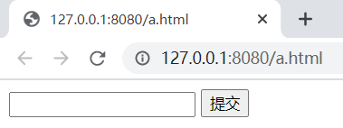
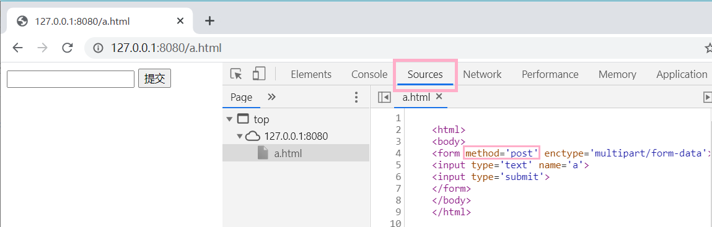
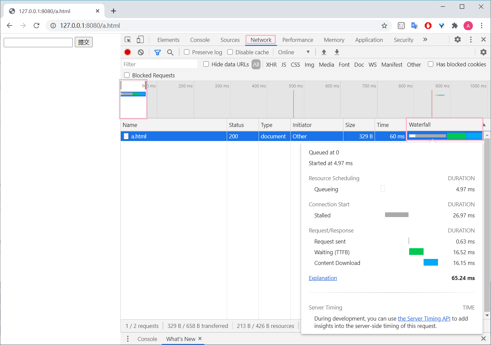
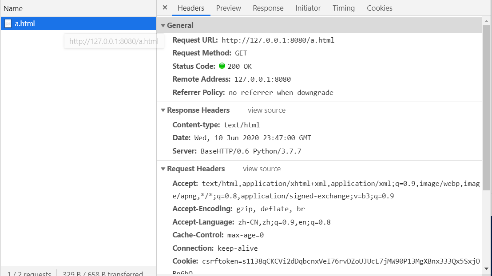
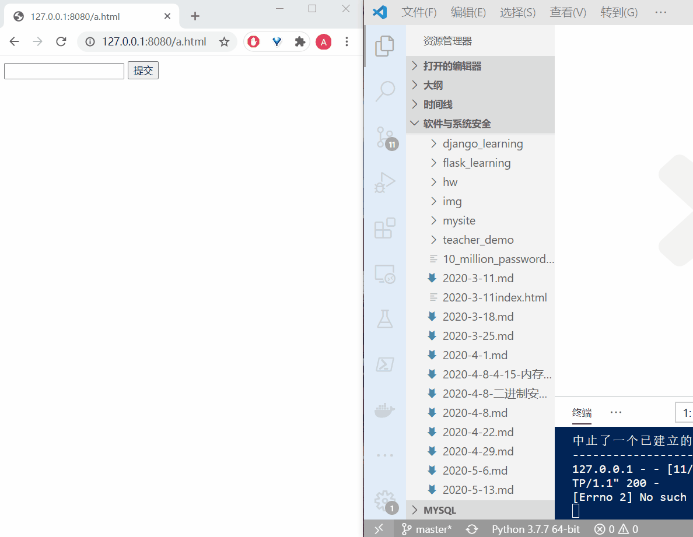
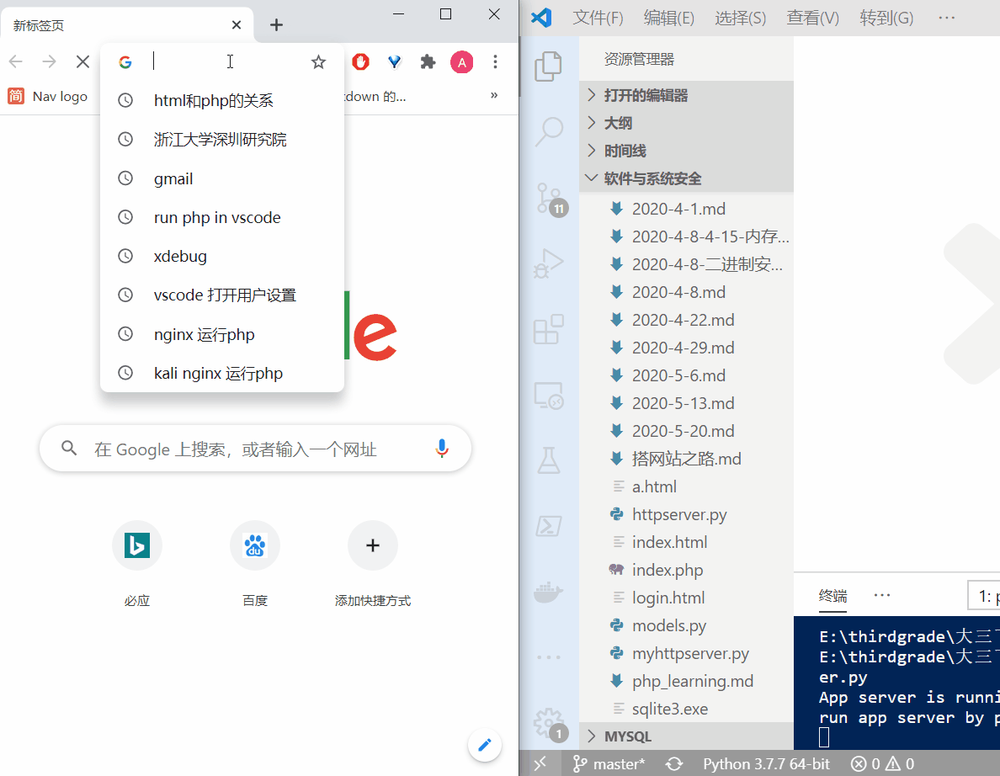

XSS攻击
使用python内置的库开发一个基本的http服务器端
- 测试代码
- 使用python原生的cgi和http.server两个库运行的一个简单的http服务器程序
- 因为没有使用第三方库，所有不需要使用pip安装依赖
- 运行比较简单
- 公共网关接口（Common Gateway Interface，CGI）是Web 服务器运行时外部程序的规范，按 CGI 编写的程序可以扩展服务器功能
讲解代码
# -*- coding: utf-8 -*- |
运行代码
使用
python httpserver.py或者py httpserver.py使用vscode调试代码，在同目录下会自动生成一个
.vscode的目录，目录下生成launch.json文件，配置如下{
// 使用 IntelliSense 了解相关属性。
// 悬停以查看现有属性的描述。
// 欲了解更多信息，请访问: https://go.microsoft.com/fwlink/?linkid=830387
"version": "0.2.0",
"configurations": [
{
"name": "Python: 当前文件",
"type": "python",
"request": "launch",
"program": "${file}",
"console": "integratedTerminal"
}
]
}
在浏览器的访问网址为
127.0.0.1:8080/a.html
主要的父类与子类
http methods
- http请求下的多种methods
- 通常使用得最多的，是 GET 和 POST
- 直接在浏览器中输入链接，浏览器拿到地址以后，默认是采用 GET 方式向服务器发送请求，GET 方式最常见。
- 表单使用的 post 方法提交数据
<form method='post' enctype='multipart/form-data'> - 通常来说，从服务器获取数据，使用 get 方法，向服务器提交数据，使用 post 方法
- 其他的方法，在现在的web应用程序中，用到的很少
MyHTTPServer类
MyHTTPServer类，是继承自原生的HTTPServer，重写 init 函数，增加了打印输出语言
然后直接调用父类 HTTPServer 的 init 函数传递了服务器运行需要的地址、端口等参数，我们的监听地址和端口是 0.0.0.0:8080
class MyHTTPServer(HTTPServer):
def __init__(self, host, port):
print("run app server by python!")
HTTPServer.__init__(self, (host, port), MyHTTPRequestHandler)
MyHTTPRequestHandler
- MyHTTPRequestHandler 类，这个是 HTTPServer 的回调，用来处理到达的请求，也就是 0.0.0.0:8080 上有任何的 HTTP 请求到达时，都会调用 MyHTTPRequestHandler来处理
- MyHTTPRequestHandler 直接继承自 BaseHTTPRequestHandler
- 重写了父类的 do_GET和do_POST两个方法
- 这个HTTP请求的处理类是整个代码的主体，也是出问题的地方
- 在 python 的 BaseHTTPRequestHandler 类中 ，do_XXX函数，就是处理对应的客户端请求的函数。代码指定了 MyHTTPRequestHandler 来处理 http 请求，那么当用 GET 方法请求，就会调用 do_GET，POST 方法请求，就会调用 do_POST函数
- 浏览器所发送的数据包里包括请求类型， 在 http 的 headers里，会说明方法。
- 这是python最基本的http 服务器的方式
其他处理
- 通常，一个静态的http服务器，这里的路径就是 http 服务器根目录下的文件，动态服务器可能是文件和参数，或者是对应其他服务器后台的处理过程
- self.path 是这个请求的路径
- 例如 http://127.0.0.1:8080/a.html 。其中 http://127.0.0.1:8080是协议服务器地址和端口。/a.html就是路径
- 例如 http://127.0.0.1:8080/a.php?p1=x 。指定由 a.php 来处理这个请求，参数是 p1=x 。问号后面是参数，可以有多个
- 一般来说，如果读的文件不存在，应该返回404
- self.send_response(200) 按照协议应该是404
- 则这里的处理为 如果指定的文件不存在，还是返回200，表示请求路径是正确的，可以处理，然后返回一个默认的页面。这个页面是 form_html的变量，在FileNotFoundError异常处理过程中写回
- self.wfile 和 self.rfile 对应 http 响应和请求的 body 部分
- GET处理完成以后，浏览器就拿到了 200 状态的 "Content-type" 为 "text/html" 的 form_html
- 在浏览器刷新是重复上一次的POST请求，所以会提示是否要重新提交表单
调试运行
- 在 def do_GET 下断点，刷新浏览器，代码就会断点命中中断。
- 结合浏览器，抓包看看 http 请求和响应的数据格式 （用抓包器或者浏览器的调试模式观察）
浏览器调试模式
打开浏览器的调试模式(chrome > 菜单 > 更多工具 > 开发者工具)
在sources这个标签下看到服务器向浏览器返回的数据，即 form_html 变量
这一段 html 浏览器渲染出来，就是那个带一个编辑框的表单- 表单指定了使用post方式向服务器提交数据

在network tab里可以看到完整的请求响应过程

完整的网络数据，其中 header 里就说了 GET 或者 POST 、返回的状态码200等等

在表单中填入数据，点提交按钮，然后服务器的 do_POST 函数被调用。通过 cgi.FieldStorage解析了客户端提交的请求，原始的请求的头部在self.headers。body部分在self.rfile。解析完成以后放到 form_data变量里，其中 form_data['field_name'].value 是在编辑框中填入的数据
form_data = cgi.FieldStorage(
fp=self.rfile,
headers=self.headers,
environ={
'REQUEST_METHOD': 'POST',
'CONTENT_TYPE': self.headers['Content-Type'],
})
使用场景
通常，一个服务器会根据业务逻辑处理用户提交的数据，比如用户发表的商品评论，比如在线教学系统中填入的作业一般会写入数据库。但是这些数据，在某些情况下又会被显示出来，比如其他用户查看别人的商品评论的时候，比如老师查看学生的作业时。
为了模拟这个过程，简化了一下，没有用户系统，也没有数据库，直接写入了 path 对应的文件。
处理用户提交，写入文件
fields = form_data.keys()
if self.field_name in fields:
input_data = form_data[self.field_name].value
file = open("."+self.path, "wb")
file.write(input_data.encode())- fields = form_data.keys()是获取表单中的键值对，因此使用.value得到输入的值：这里获得是对应的是form中input的name
<input type='text' name='%s'> - 表单以变量名变量值的方式组织，input的name相当于变量名，填入的数据就是变量值
- python的cgi.FieldStorage将form组织为python的dict数据类型，所以可以通过 form_data['field_name'].value 获得所填入的数据
- fields = form_data.keys()是获取表单中的键值对，因此使用.value得到输入的值：这里获得是对应的是form中input的name
如果写入成功，就返回一个 200 状态的 OK
self.send_response(200)
self.send_header("Content-type", "text/html")
self.end_headers()
self.wfile.write(b"<html><body>OK</body></html>")
```
## 漏洞
- 如果向网页中填入了 123 ，那么123被写入了a.html文件。执行完成后，同目录下会多一个a.html，内容为123。然后下次再访问 http://127.0.0.1:8080/a.html 时，在浏览器地址栏里回车。由于这个时候a.html已经存在了，所以是运行的部分是
```py
else:
content = file.read()
self.wfile.write(content)- 会直接把文件内容会写给浏览器
- 这里是在简化模拟用户提交数据 > 存入数据 > 其他用户获取这个数据的过程

XSS漏洞
再访问一个不存在的页面，比如b.html，又会出现那个默认的form。这时输入
<html><body><script>alert('XSS')</script></form></body></html>，然后在访问b.html的时候，整个页面被载入 script 在浏览器上执行，也就是用户提交的数据被执行了
重新开一个页面，在c.html中填入
<html><body><script>window.location.href='http://by.cuc.edu.cn'</script></form></body></html>。下次再访问c.html的时候。页面跳转了。window.location.href='http://by.cuc.edu.cn'这段脚本的功能是实现了跳转
理论上，任何的js都是可以被执行的。js可以实现非常丰富的功能。比如可以骗取用户扫码、支付，实际到黑客的账户。如果是没有基本防御措施的网站，这段会被放进服务器数据库里，然后别人提交了数据就自动跳转到这个网站。比如有一个商品A，用户在评论里输入了一段js代码。如果服务器不做处理直接保存。后面的用户访问商品A、看评论，前一个用户输入的代码就会在其他用户的页面上执行。
Furthermore
如果大家在浏览器中访问 http://127.0.0.1:8080/httpserver.py ，则在sources中显示全部完整的源代码。由于服务器没有做任何过滤，只要是存在的文件，就发送给客户端
- 现在黑客可以知道我整个后台的逻辑了。
- 如果还有一些配置文件，比如数据库地址和访问口令等。那就更严重了
- 更严重的是，黑客甚至可以注入后端代码。由于我们是回写到文件，可以构造一个http post请求，把httpserver.py文件改写了。但是构造这个请求用浏览器就不行了，需要采用curl等更基础的工具裸写post请求发送给服务器的
在调试工具的 elements tab，由于后台只处理名为a的表单项写入文件，所以我们需要把input的把 name="%s" 改为 name="a" 再提交。改为以后，同时在提交框中输入‘hahaha’提交。此时httpserver.py，它变为'hahaha'，只是注入一个hahaha 服务器就挂了，再也跑不起来了。
所以，这是一个及其简单，但是漏洞百出的web服务器。这就是不做任何过滤，直接写入数据的危害。